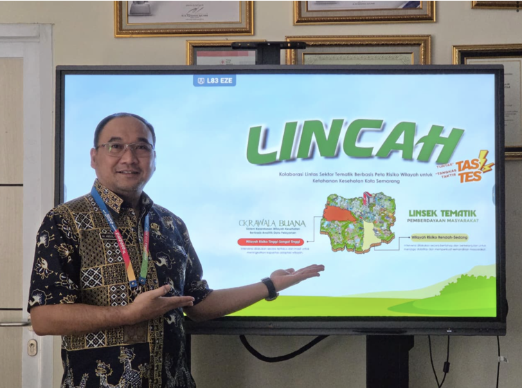

- Senin - Kamis 8:00 - 16:00 / Jumat 7:30 - 14:00
- Email: 024-8318070
- Jl. Pandanaran No 79 Semarang Lt. 8 s.d 10
About Us
Sed ut perspiciatis unde omnis iste natus error sit voluptatem accusantium doloremque laudantium, totam rem aperiam, eaque ipsa quae ab illo inventore veritatis et quasi
Research oriented solutions for Data Science and Machine Learning business needs.
About UsContact Info
- Chicago 12, Melborne City, USA
- +88 01682648101
- info@example.com
Dashboard Risiko
Monitoring, analisis, dan visualisasi data risiko secara real-time untuk mendukung pengambilan keputusan.
Forum Linsek
Media kolaborasi lintas sektor untuk koordinasi, diskusi, dan berbagi informasi strategis.
Data Publikasi
Pusat informasi publikasi, laporan, dan dokumen resmi yang dapat diakses secara terbuka.

LINCAH
Layanan Inovasi Cegah Ancaman KesehatanLINCAH
Kolaborasi LIntas Sektoral Tematik Berbasis Peta Wilayah Risiko Kesehatan untuk Peningkatan Ketahanan Kesehatan Kota Semarang
LINCAH (Kolaborasi Lintas Sektoral Tematik Berbasis Peta Risiko Wilayah Kesehatan untuk Peningkatan Ketahanan Kesehatan Kota Semarang) adalah inovasi Dinas Kesehatan Kota Semarang untuk memperkuat ketahanan kesehatan masyarakat. Melalui pendekatan yang cepat, adaptif, dan berbasis data, LINCAH hadir untuk mendeteksi potensi risiko kesehatan sejak dini, merespons dengan tepat, serta melibatkan masyarakat dalam menjaga lingkungan yang sehat.
- Respon kesehatan cepat & tepat
- Pencegahan penyakit lebih efektif
- Budaya hidup sehat masyarakat
- Ketahanan kesehatan berkelanjutan